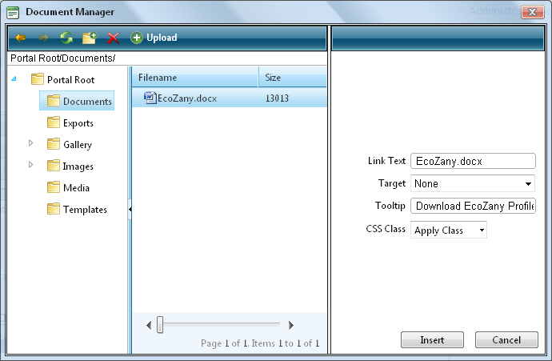

Inserting a Document
How to insert a document using the TelerikEditorProvider for the RTE.
- Click the Document Manager button. This opens the Document Manager.
- Navigate to and select the required document. See "Using the Resource Manager"
- Optional. In the Link Text text box, modify the text associated with this document. The filename is used by default.
- Optional. At Target select the target window for this link.
- Optional. In the Tooltip text box, enter a tool tip to be displayed when a user places their mouse over this link.
- Optional. At CSS Class, select a class for the document link.
- Click the Insert button.
Tip: Additional document properties are available. See "Setting Document Properties"

Inserting a Document